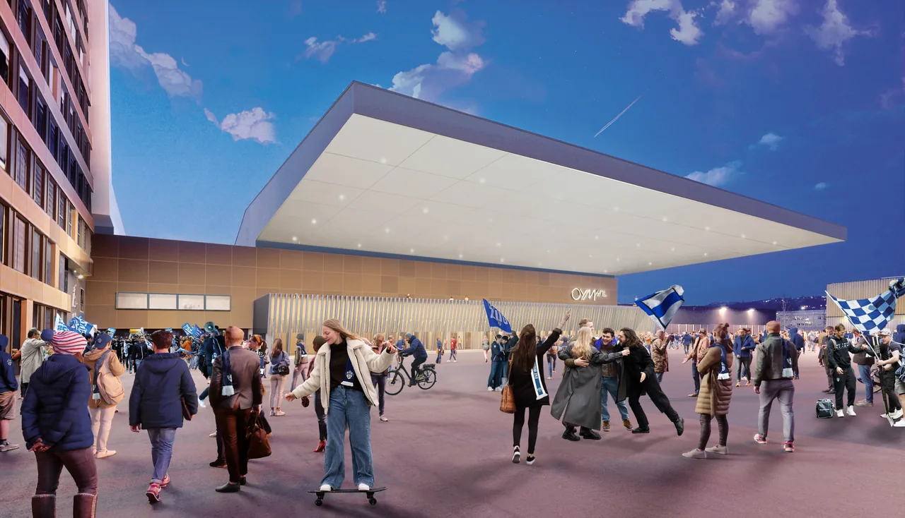
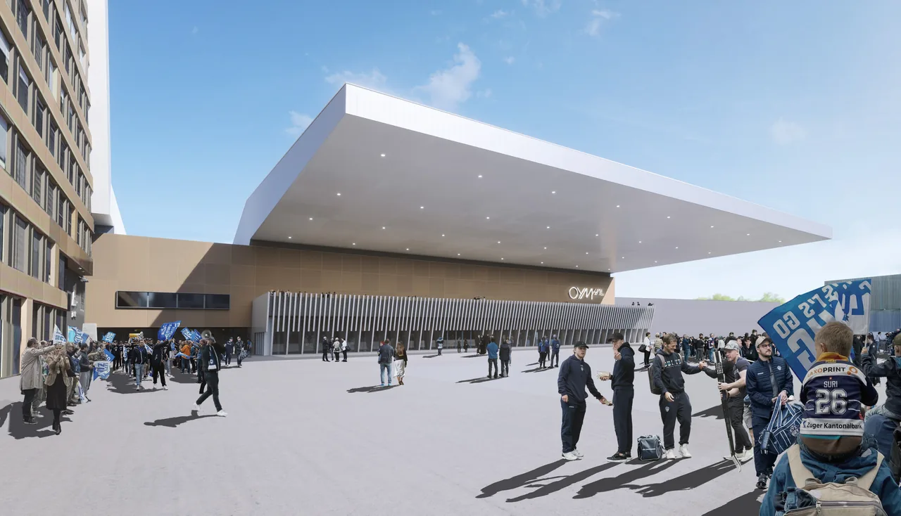
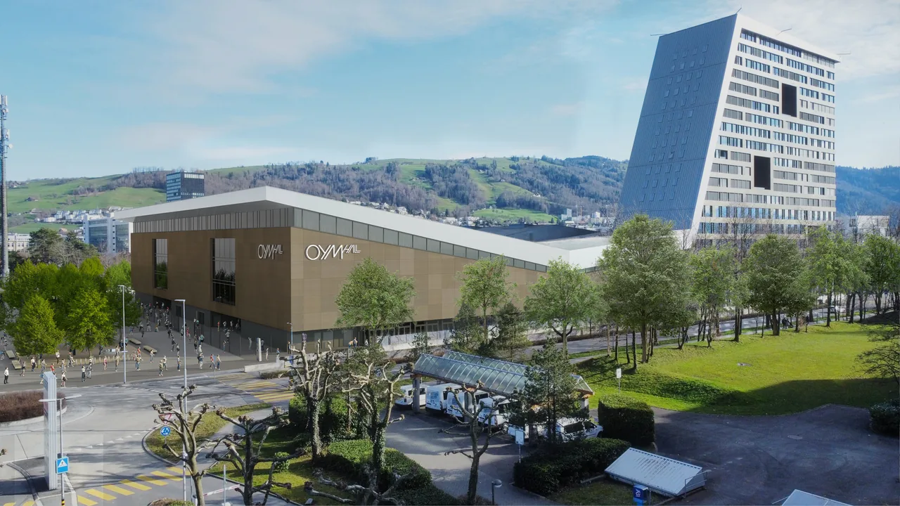

Die Bossard-Arena ist in den vergangenen Jahren mit dem EVZ gewachsen. Sie wird durch neue Räume, höhere Kapazitäten und ein erweitertes Besuchererlebnis zukunftsfähig weiterentwickelt – keep building.
Seit ihrer Einweihung 2010 ist die Bossard Arena zur zentralen Spielstätte des EVZ geworden. Der sportliche Erfolg und die steigenden Zuschauerzahlen führten zu räumlichen Grenzen. Im Schweizer Vergleich lag die Arena bei der Zuschauerkapazität auf Rang 6, beim Gastronomieangebot lediglich auf Rang 12 – insbesondere hier bestand Handlungsbedarf.
Mit «keep building» wird die bestehende Arena konsequent weiterentwickelt: Die Zuschauerkapazität steigt mit der Erweiterung von 7’200 auf 9’000 Plätze, gleichzeitig wird das Gastronomieangebot wesentlich erweitert. Ziel ist eine leistungsfähige und zukunftsorientierte Arena mit einem vielfältigeren Besuchererlebnis.
Aus den Machbarkeitsstudien «next level» und «keep building» fiel 2021 der Entscheid zugunsten des Weiterbauens. Das darauf basierende Richtprojekt bildete die Grundlage für die Revision des Bebauungsplans, welcher 2023 erfolgreich abgeschlossen wurde. Die Baueingabe erfolgte 2024 und wurde im selben Jahr bewilligt. Im Sommer 2025 begann mit dem Rückbau und dem Bau des Moduls Süd die Umsetzung.
Die Bossard Arena, seit 2026 OYM hall, wird nicht neu erfunden – sie wird weitergebaut. Der Bestand bleibt Grundlage und Identität, wird jedoch gezielt für die Zukunft erweitert.


